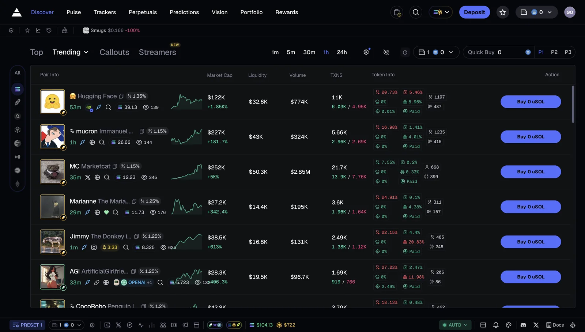
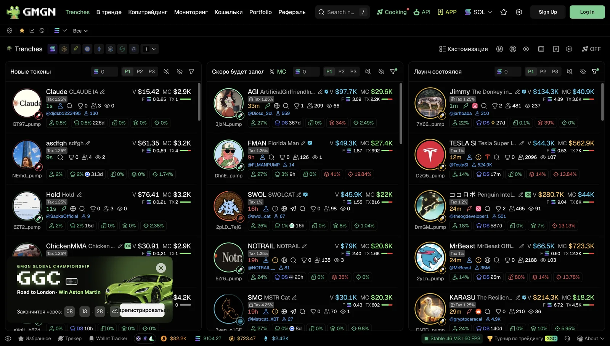
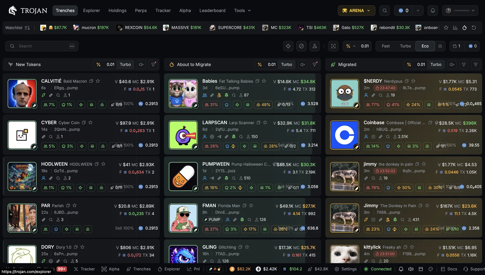
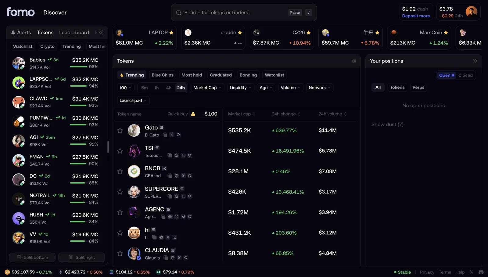

Trady — decentralized trading terminal: web, iOS app, pitch deck and video Trady — децентрализованный торговый терминал: веб, iOS‑приложение, питч‑дек и видео
Design a decentralized trading terminal for memecoin traders on web and iOS, and produce everything around the product: the investor pitch deck and video for social media. Спроектировать децентрализованный торговый терминал для трейдеров мемкоинов на вебе и в iOS и сделать всё вокруг продукта: питч‑дек для инвесторов и видео для соцсетей.
CompetitorsКонкуренты
Memecoin traders already have strong platforms: Axiom, GMGN, Trojan and Fomo. For many users, terminals like Axiom feel overloaded and hard to read, while Fomo is simplified so much that there is not enough data to make decisions. My task was to build a lighter version for people who are tired of, or confused by, trading on platforms like Axiom, but not as stripped down as Fomo: with more data and metrics that traders can actually use. Трейдеры мемкоинов уже торгуют на сильных платформах: Axiom, GMGN, Trojan и Fomo. Для многих пользователей терминалы вроде Axiom перегружены и непонятны, а Fomo упрощён настолько, что данных для принятия решений не хватает. Моя задача — сделать более лёгкую версию для тех, кому надоело торговать на таких платформах, как Axiom, или кто в них путается, но не такую простую, как Fomo: с большим количеством данных и показателей, которыми трейдеры реально пользуются.




One design system, built in code with ClaudeОдна дизайн‑система, собранная в коде с помощью Claude
I merged three existing design systems into one final system, then rebuilt it in code on the web with Claude. This lets me generate high‑quality mockups and hand them to developers quickly, which speeds up the whole process. Я собрал одну финальную дизайн‑систему из трёх существующих, а затем воссоздал её в коде на вебе с помощью Claude. Это позволяет генерировать качественные макеты и быстро передавать их разработчикам, что ускоряет всю работу.
Trading terminal for the browserТорговый терминал для браузера
Desktop screens: the Discover token feed, token trading, new pairs in Trenches, search, wallet and trader trackers, Portfolio and the Referrals program. The visual themes are below. Десктопные экраны: Discover, торговля токеном, новые пары в Trenches, поиск, трекеры кошельков и трейдеров, Portfolio и реферальная программа Referrals. Темы оформления — ниже.
Main screensОсновные экраны
ThemesТемы
Besides the default dark theme, the terminal has a light theme and themes adapted to the look of well-known trading terminals; colors and font are configurable. Кроме тёмной темы по умолчанию есть светлая и темы, адаптированные под стилистику известных торговых терминалов; цвета и шрифт настраиваются.
Native app on the same design systemНативное приложение на той же дизайн‑системе
The SwiftUI app now runs on the shared design system: one set of colors, type and spacing across web and iOS. Onboarding, Discover, Trade, Portfolio, trackers and search screens are included. Приложение на SwiftUI теперь работает на общей дизайн‑систему: одни цвета, шрифт и отступы на вебе и в iOS. Здесь же онбординг, Discover, Trade, Portfolio, трекеры и поиск.
OnboardingОнбординг
Discover, search & tradingDiscover, поиск и торговля
Portfolio & trackersPortfolio и трекеры
Investor pitch deckПитч‑дек для инвесторов
I designed the pitch deck for the project, from the problem to the ask. It has eight sections: Problem, Solution, Product, Why now, Market, Team, a 12-month plan and The ask. Я сделал питч‑дек проекта: от проблемы до запроса. В нём восемь разделов: проблема, решение, продукт, почему сейчас, рынок, команда, план на 12 месяцев и запрос.
Website designДизайн сайта
Landing page for the Trady terminal. Scroll recording of the page. Лендинг терминала Trady. Запись прокрутки страницы.
Content for social mediaКонтент для соцсетей
Promo video for the project's social media. Промо‑видео для соцсетей проекта.